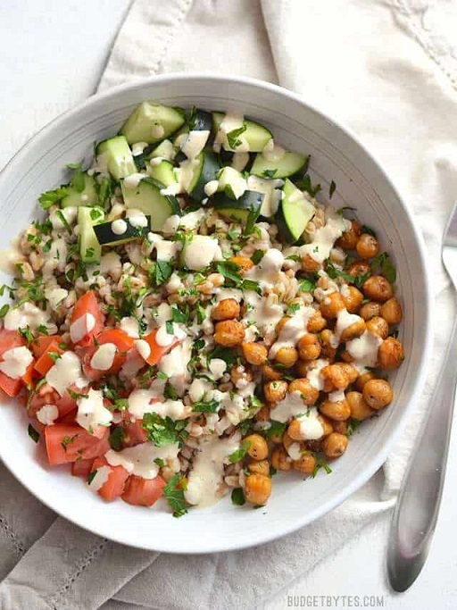

Farro Salad

Description
This Mediterranean Farro Salad with Spiced Chickpeas is packed with flavor, texture, and nutrients.
Ingredients
Dressing
- 1/3 cup tahini
- 1/3 cup water
- 1/4 cup lemon juice
- 2 cloves garlic, minced
- 1/2 tsp ground cumin
- 1/4 tsp cayenne pepper
- 1/2 tsp salt
Spiced Chickpeas
- 1 15oz. can chickpeas
- 1 Tbsp olive oil
- 1/2 tsp smoked paprika
- 1/4 tsp garlic powder
- 1/8 tsp cayenne pepper (optional)
- Freshly cracked black pepper (10-15 cranks of a mill)
- Salt to taste
Salad
- 3 cups cooked farro (or other grain)
- 2 Roma tomatoes
- 1 cucumber
- 1/4 bunch fresh parsley
Steps
- To make the dressing, combine the tahini, water, lemon juice, minced garlic, cumin, cayenne, and salt in a blender. Blend until smooth. Set the dressing aside until ready to use (keep in the refrigerator for up to 5 days).
- Rinse and drain the chickpeas in a colander. Heat the olive oil in a non-stick skillet over medium heat. Once hot add the drained chick peas. Sprinkle the smoked paprika, garlic powder, cayenne pepper (if using), and some freshly cracked pepper over top. Stir the chickpeas to coat in the spices, then continue to sauté for about five minutes, or until the outside of the chickpeas are slightly browned and blistered. Season with salt to taste.
- Chop the tomatoes, cucumber, and parsley. Place about 3/4 cup cooked farro in each bowl, then top with chopped tomato, chopped cucumber, spiced chickpeas, and a large pinch of chopped parsley. Drizzle the dressing over top and serve.